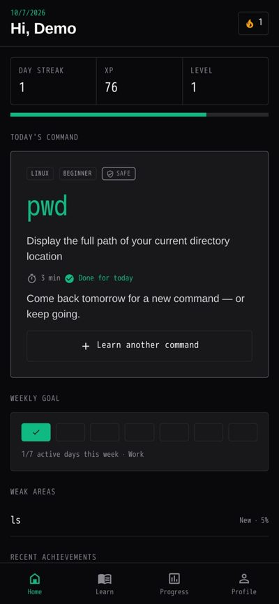
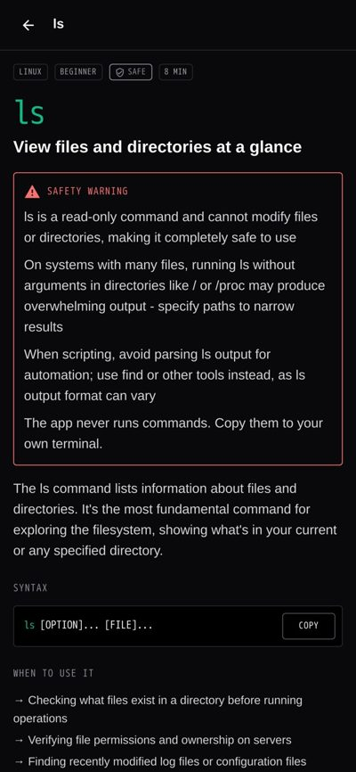
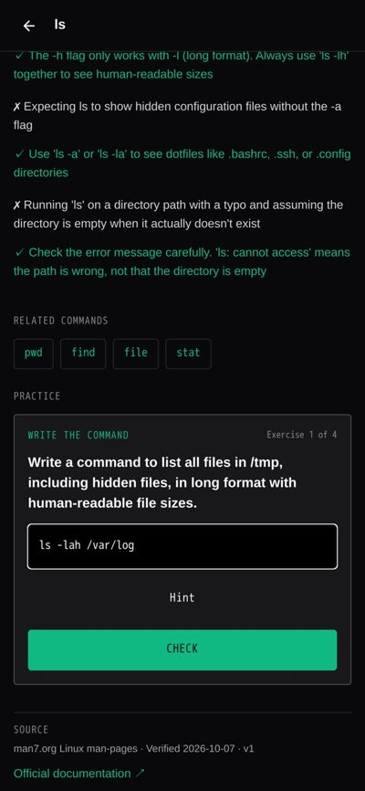

Impara il terminale.
$ un comando al giorno
Pochi minuti al giorno: esempi veri, errori da evitare ed esercizi corretti dall'AI. Dal primo ls a grep, find e chmod senza paura.
Scarica gratis su App Store
Premium gratis per 7 giorni con il piano annuale.
- 1Un comando nuovo ogni giorno, spiegato con esempi pratici.
- 2Gli errori più comuni (sì, anche
chmod 777) e come evitarli.
- 3Esercizi e quiz corretti dall'AI, con streak e livelli per restare costante.
- 4Linux, macOS, PowerShell e CMD in un'unica app.


